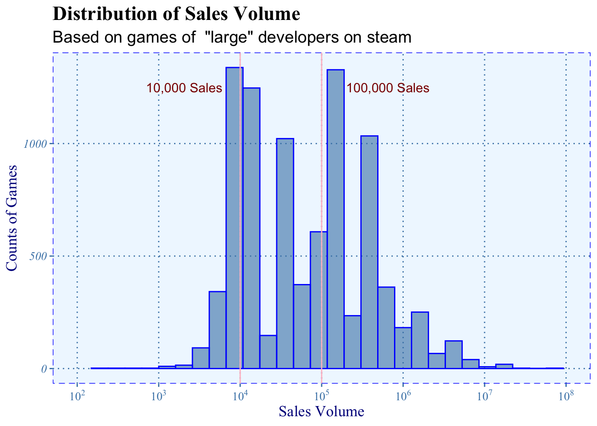

Chapter 3 Data transformation
3.1 Description
Since the data has been pre-cleaned by the source, our transformation is:
To deal with the sales variable, we convert the ranges (categories) into quantity by generating random numbers from the normal distribution in range. For each range, we set the medium number as the mean, standard deviation as the range/6. The main purpose of generating random number is to produce continuous data instead of categories data. For example, in range “0-20000”, we will replace value by generating number within mean = 10000, and standard deviation = 20000/6 (Since by the definition of area in normal distribution, 20000/6 will cover 99.7% of the total area in normal distribution) if the generated data is outside of 99.7% area in normal distribution, we will round them inside.
Combine developers with their branch (For instance, “Ubisoft Montreal” is the Canandian branch of “Ubisoft”) and integrate the format of the same developer in different expressions. (For instance, “Astrofish Games” and “Astrofish Games Ltd” or “Astrofish Games Co, Ltd”)
Group the data by platform, developer, etc. Filter the developers with the number of games they publish.
3.2 Before transformation
First, we look at the graph as dimension of sales number and number of companies, from the graph above to find the pattern for games’ sales volume. We draw two vertical lines, sales volume of 10000 and 100000, as shrehold to identify the game.
We can see that it’s approximately a right-skewed normal distribution. The largest bar is around 10000, which means many games have 10000 sales volume or below. Since our focus is primarily on games who are defined as ‘good’, which would be ‘AAA games’, therefore, we add a threshold at 10000(red line), and drop the game that sales volume is about 10000 and below, which means ’the games whose sales volume below 10000 have few quantities and hence is trivial for us to make further analysis. For our next step, we add another threshold line at 100000(blue line). Since there are too many games below 100000 and it is not in our consideration for AAA games. Therefore, we further narrow down our scope for analyzing top games.
Concerning that sales of games would vary dramatically from the time they just have been released and become steady after a period of time, we drop the games released after 2019 since the result would be unstable. In another perspective of filtering, we mark the companies whose sales volume over 100000 as “large companies”. We define “ratio” as positive ratings over all ratings and “money” as sales volume multiplied by price.
3.3 After transformation

Similar to the game volume plot, we filtered first that for the total game sales of companies that larger than 100000, narrowing down our analyze range. After we draw sales plot grouping by developers, it shows almost the same distribution: a right-skewed normal distribution. So, we add red shrehold line at 10000 and drop the developers whose sales below it for the same reason.